Enterprise systems · AI · Complex workflows
I design product experiences across enterprise SaaS, AI and complex operational systems — four years spent turning dense, technical problems into interfaces people can actually use. I started in architecture, designing space before I designed software.
Users, permissions, workspaces, integrations, usage and system health all needed one structure that could scale — not one large settings menu.
Each team builds its own admin — different vocabulary, different layout, every time.
One mental model. Right scope at every level, everywhere.
Group by the administrator's responsibility — not by the underlying system.
Owns identity, security and tenant-wide governance — connects SSO, defines the org hierarchy, designates app admins.
Designated by the Platform Admin — configures how one application uses what's already approved, nothing more.
Set up once. Configure per app. Two apps can share one Salesforce connection and still do completely different things with it.
A starting point for the sub-organizations an administrator can manage, before moving into the relevant context. Once inside, the experience surfaces what matters first — workspaces, admins, credits used, utilization — and a workspace selector keeps that context as administrators move across areas.
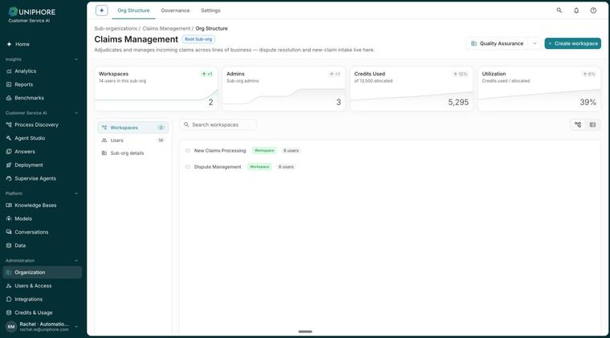
Administration also means governing what AI is allowed to do. Governance sits within the organizational context rather than as a separate experience — a Human-in-the-Loop queue surfaces high-risk actions for admin approval or rejection.
Users answers “who has access?” Roles answers “what are they allowed to do?” — kept as separate, related surfaces.
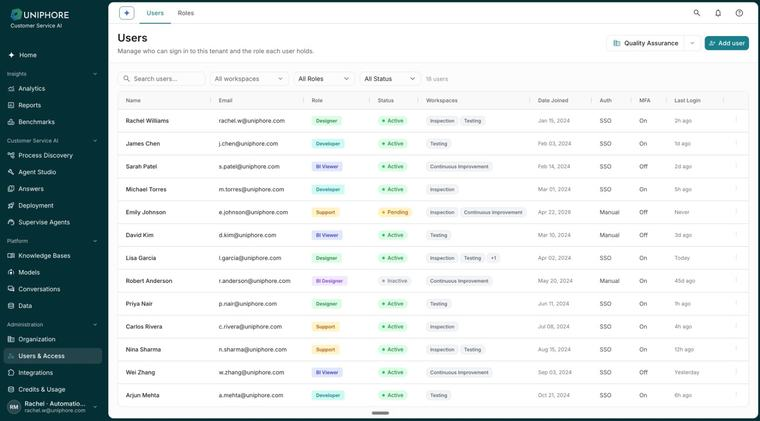
AI systems rarely operate independently — each active integration surfaces its health and the actions admins need most.
Platform approves, app configures.
Account health first — total inferences and daily burn — then usage by skill and model one level down.
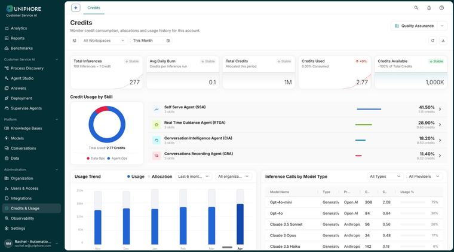
Cross-cutting configuration, grouped so it stays separate from daily administration. Platform shapes the tenant, app shapes itself — Account, Provisioning and Data & Security apply tenant-wide; an App Admin's settings apply only to their own application.
I contributed to structuring and designing the latest Administration experience, working within the broader platform and design-system direction.
Enterprise administration is mostly invisible — when it works well.
Self-service, agent assist, capture and analytics had grown through different products — the goal was one common platform foundation.
As the ecosystem grew, the same task could mean a different structure, terminology or configuration approach depending on where it lived.
Unification wasn't just moving screens. It meant deciding what should stay, change, or be redesigned.
Every existing capability was mapped against the new platform before any new screen was designed.
Research gave us patterns. Migration gave us constraints. The design work sat between the two.
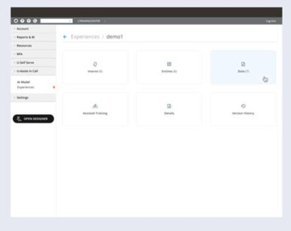
The advantage was control — explicit rules gave teams predictability for compliance-sensitive processes.
The question wasn't “LLM or rules” — it was where autonomy was useful, and where predictability was necessary.
One evolution moved the starting point closer to actual customer behaviour — instead of a blank configuration, existing conversations could surface recurring work and automation opportunities.
Discovery, configuration, flow orchestration, evaluation and guardrails, brought into one connected workspace.
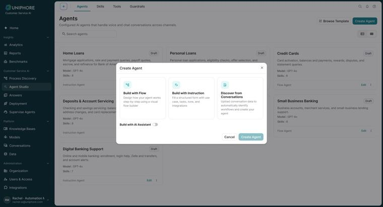
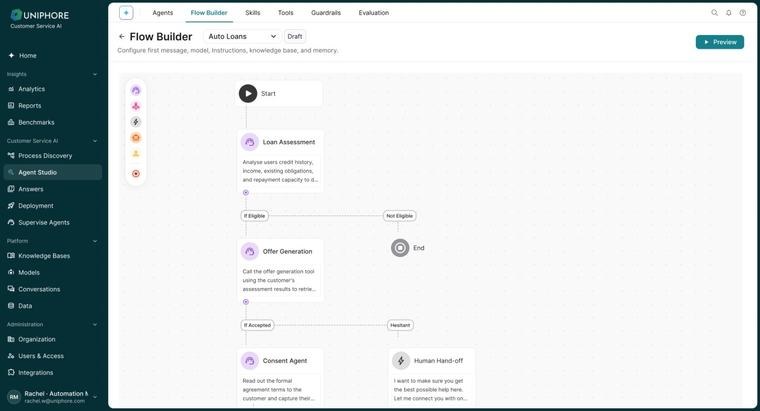
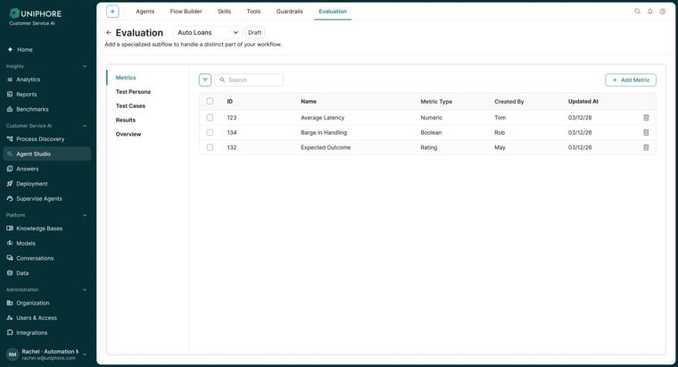
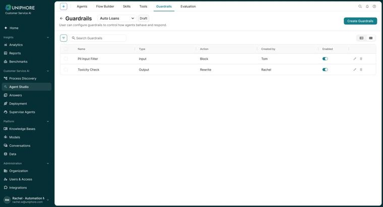
Centred on recognition — intent, entity, confidence — pass or fail.
Evaluates whether the Agent understood the task, used the right tool, and reached the right outcome.
More autonomy made safe change more important — version history tracks what changed, who changed it, and whether an earlier state can be restored.
Creation, configuration and publishing couldn't be unrestricted — my platform work also covered users, roles, permissions and account administration.
Across U-Self Serve and broader X-Platform deployments, internal reporting shows measurable improvements in how enterprise customers could configure and operate conversational AI.
Broader enterprise product outcomes from reported deployments; not attributed solely to my design work.
Control is a feature, not a fallback. Predictability isn't tolerated in compliance-heavy workflows — it's the requirement. Autonomy had to earn its place next to it, not replace it.
The harder redesign is the mental model. Moving screens is the easy part of a migration; changing how someone thinks about what they're operating takes much longer to get right.
What you preserve is a design decision. Deciding what stayed, what got redesigned and what became a gap shaped the new platform as much as anything built from scratch.
As autonomy grows, trust becomes the interface. Testing, versioning and permissions stopped being back-office details — for an Agent that can act on its own, they became the main way people could still say yes to it.
Existing capabilities during migration
Configuration and platform administration
Business users to build and manage AI Agents
Testing, versions, permissions and deployment
Enterprise AI with greater autonomy
None of this made the interface simpler. It made it more honest about what the AI was actually doing.
GenAI could generate a call summary automatically — but an insurance company and a telecom company need very different summaries.
“The AI generated the summary. The product gave teams control over what that summary should mean.”
Not every user needs to configure the AI at the same depth.
Power when needed, without making every user a prompt engineer.
Defines the model's overall behaviour.
Defines the task/context given to the model.
Additional rules for how the summary is generated.
Shows the model the kind of output expected.
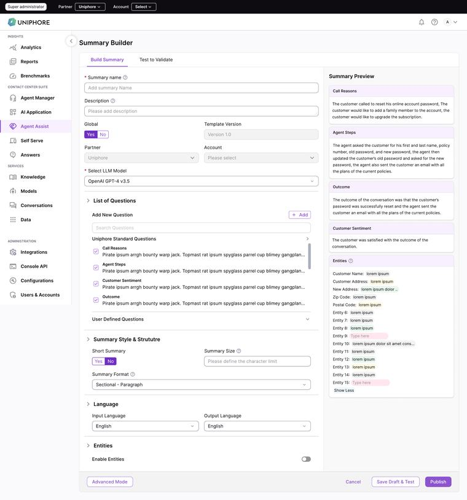
A central place to create and manage the questions used by Summary Builder.
Reusable across many customers or templates.
Specific to a particular business or use case.
Saving a question or template doesn't guarantee it behaves as expected. Testing tells the user whether a question works; tracing gives visibility into why, when it doesn't.
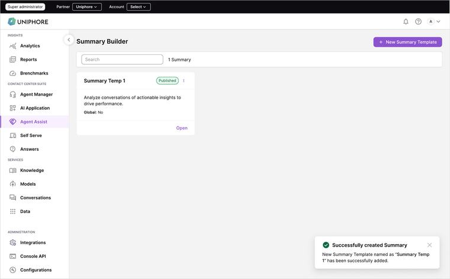
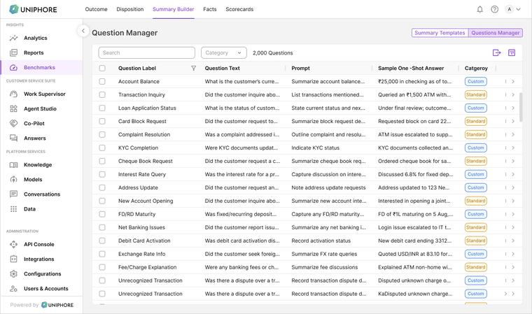
Question Manager controls what the business wants to capture; Summary Builder brings those questions together with model and structure.
Broader product/deployment outcomes; not attributed solely to UX.
By combining configurable templates, reusable questions, advanced controls and testing, Summary Builder turned a GenAI capability into something enterprise teams could actually configure and manage.
Restaurantware's catalog passed 17,000 products; the MVP-era ERP 2.0 became slow, fragile and operationally expensive under that scale.
A custom cloud ERP used as the single source of truth across these areas — powering the entire backend of Restaurantware's US e-commerce operations.
The real bottleneck wasn't feature complexity — it was repetitive admin effort, found through a legacy audit, heuristic evaluation and shadowing admin workflows.
ERP 2.0 forced every product through the same overloaded form. ERP Suite 3.0 splits it into three surfaces, one per stage.
A map drawn from shadowing purchasing, warehouse and merchandising — none of whom thought of “a product” as one object.
Show what's missing, not just what's there.
Returns Management supports full or partial returns and replacements, with fraud prevention mapped before any screen was drawn.
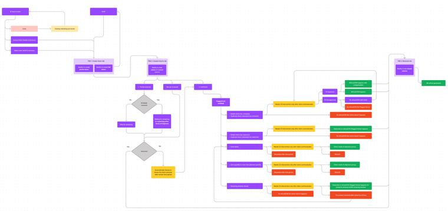
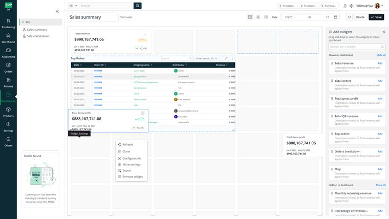
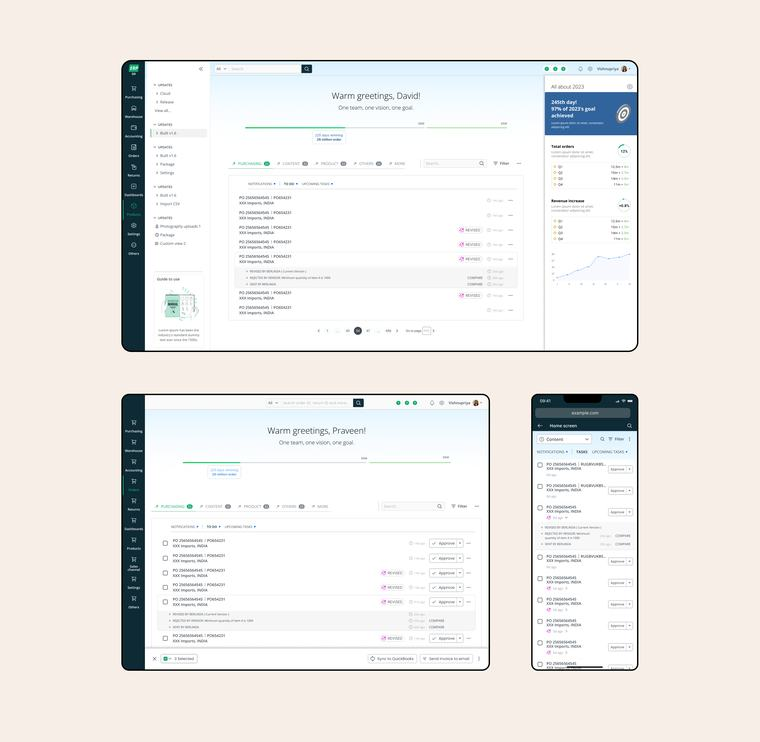
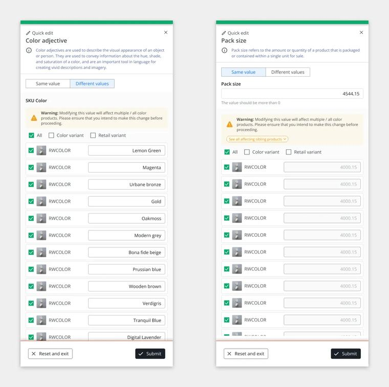
From ~2000 hours to ~300 hours of variant-editing effort; up from the ~150 products the original MVP was built for.
Designing the ERP as a platform of primitives, not a collection of screens.
Introduce automation and rule-based defaults earlier to reduce manual decisions further.
Thinking in systems, not screens, is what let this scale from 150 products to 15,000+ — and delivered outsized operational impact early in my career.
Before a new experience, we first structured the product and UX requirements — a UXRD giving Claude context, not asking it to invent the UX.
An established design system, documented in Storybook and connected to GitHub, let Claude reuse existing components instead of inventing new ones.
“The design system became context for the AI.”
Once requirements and design-system context were available, I used Claude Code inside our development environment — VS Code / Antigravity, with the project already set up — to build the experience directly, rather than an isolated visual prototype.
“The prototype became part of the design process — not just the final deliverable.”
Once an experience was functional, using it exposed problems that are difficult to notice in static screens.
AI increased the speed of iteration. Design judgement still decided what changed.
We used whichever surface helped make the next design decision fastest.
Automation shortened the feedback loop. It didn't remove the designer from it.
Maintained through GitHub — designers worked through branches so the prototype behaved like a shared artifact, not a disposable one.
UX requirements
Design-system components
Early Claude-generated build
Iteration
Updated working experience
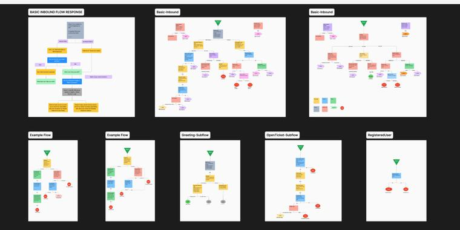
The same workflow scaled to a second example: AI Agents' flow/orchestration builder.
A loop, not a one-way handoff — tools used along the way (UXRD, Storybook, Claude Code, VS Code / Antigravity, Figma, GitHub) are secondary to the process itself.
Claude reduced the distance between an idea and something usable. But deciding what to build, how it should behave, and when something needed manual judgement stayed my responsibility.
AI didn't remove design from the process. It removed some of the distance between designing and building.
A background in architecture and interiors still shapes how I think about structure, scale and space — on screen or off.
Designing clarity for complex products.